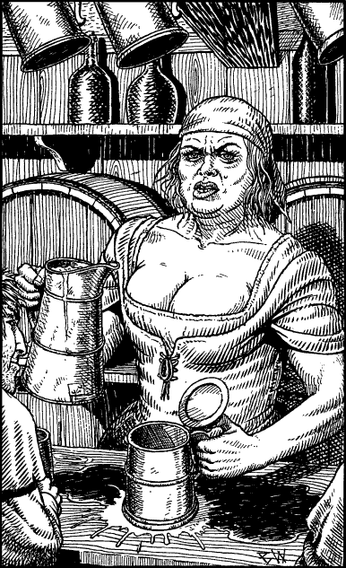

21
You enter the open doorway, and the hubbub of laughter and conversation dies momentarily as all eyes turn to stare in your direction. They consider you for a few moments; then the chatter and noise begin anew and the eyes return to other matters. After descending a flight of steps to the sunken floor of the taproom, you make your way through the noisy crowd to the beer-soaked counter. A husky serving wench thuds a pewter tankard down on the bar before you and fills it with frothing ale.

‘First one’s on the ’ouse,’ she says, with a snarl, ‘the rest y’ pays for, understand?’ You nod your reply and, as you sip the watery brew, you take stock of the inn’s villainous clientele. They are not a pretty crowd. The Crooked Sage is a tavern with an ill reputation, even in the brawling turmoil of Helgor’s north quarter. The city guard never patrol here; a weekly donation to the guard captain guarantees that they are always somewhere else. Order, and what passes for law, is kept by Chegga, the owner of the inn, and his two brutish sons—Zhola and Gorgan.
You finish your ale and the serving wench returns to refill your tankard.
‘That’ll be one Gold Crown,’ she says, thrusting out a calloused palm. You place the crown on the bar and, as she goes to pick it up, you take hold of her wrist to prevent her from moving away. 6
‘Where’s Smudd? Is he here tonight?’ you ask.
‘Over there,’ she growls, pointing to a shadowy alcove at the rear of the taproom. ‘Now let go o’ me or I’ll call Chegga.’
Calmly you release her, take up your ale, and walk slowly towards the place where Smudd is seated. He is in the company of a giggling bar-girl and does not notice that you are standing beside him until you thump your tankard down on his table. The sound startles him and immediately he reaches for his sword.
He has a desperate look about him which reminds you of a cornered rat. If you are to avoid a confrontation, you must do or say something to assuage his fear.
If you possess Kai-alchemy, turn to 294.
If you wish to offer him some money, turn to 169.
If you choose to offer him one of your Backpack Items, turn to 108.
Footnotes
[6] If you have already spent all of your money, you have a choice: you may either give her an item of comparable or greater value, or you may simply disregard this cost.